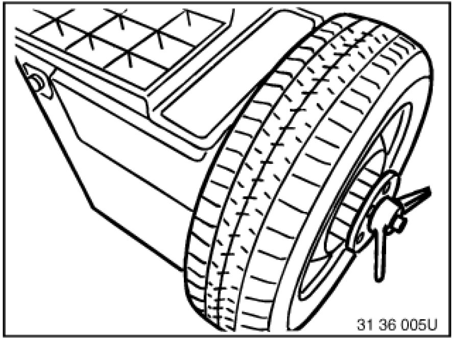
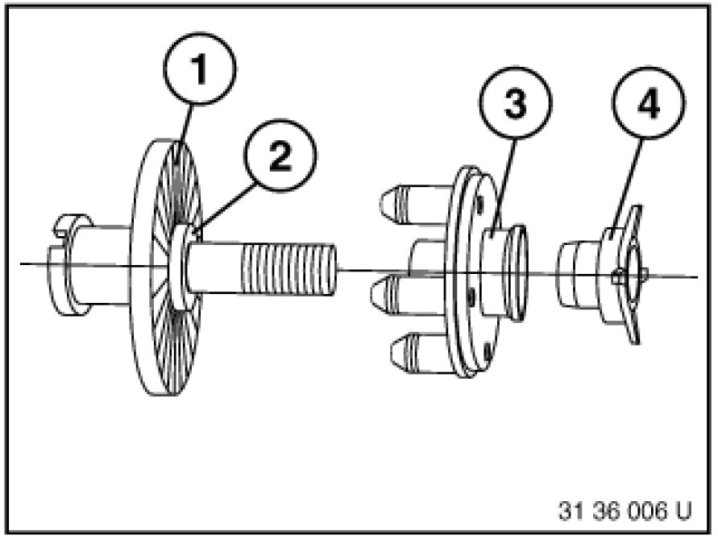
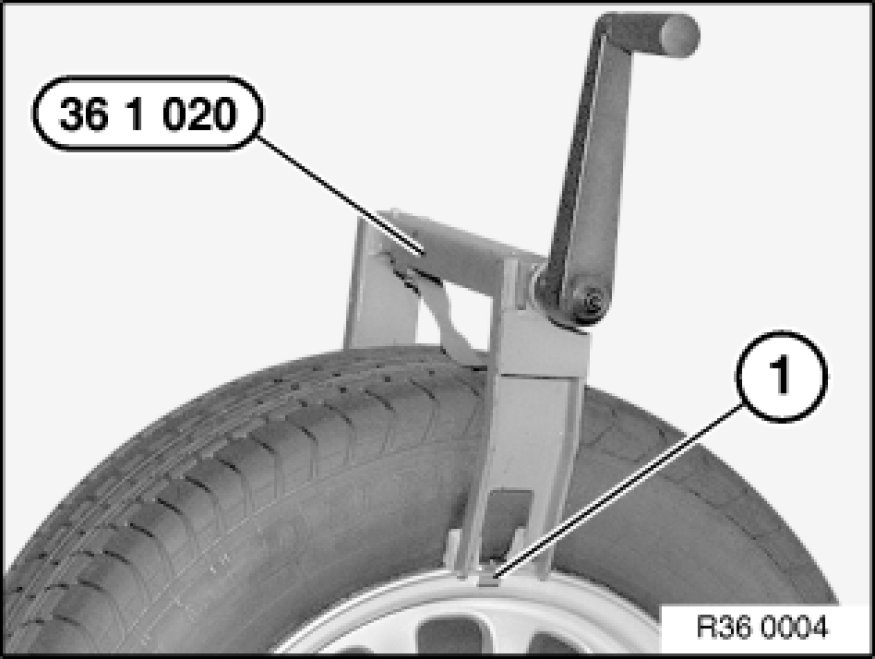
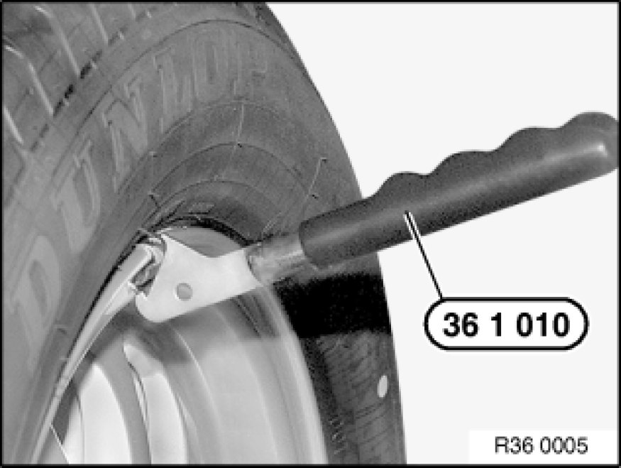
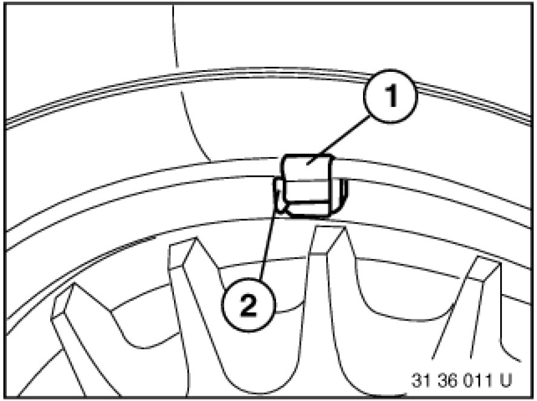
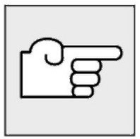

Stationary Wheel Balancing
36 10 508 - Stationary wheel balancing
Special tools required:
- 36 1 010 36 1 010 Spring Lifter
- 36 1 020 36 1 020 Tire Pliers
Necessary preliminary tasks:
- Remove wheel
Important!
Use only BMW-approved balance weights.

Remove any fitted balancing weights, stones in tread pattern and larger contaminants.
Check tire pressure, check tire for condition, damage, flat spots (out-of-round caused by e.g. stopping the car with hot tires); if necessary, check wheel and tire for radial and lateral runout .

Use BMW-approved centering elements of relevant balancing machine manufacturers.
1. Basic flange
2. Wheel centering element
3. Type flange
4. Clamping nut
Also refer to section on Workshop Equipment.
Important!
To avoid retooling errors, it will be necessary to fit the wheel on the balancing machine in the same way (e.g. valve facing down) as it is then fitted on the car.
Balance wheel in accordance with operating instructions of relevant balancing machine.

On light-alloy rims with distinctive J-shape rim flange, proceed as follows:
1. Gently force off tire side wall with special tool 36 1 020 36 1 020 Tire Pliers at appropriate point from rim flange.
2. Install retaining clip (1).
3. Remove special tool 36 1 020 36 1 020 Tire Pliers.

Raise retaining clip with special tool 36 1 010 36 1 010 Spring Lifter. Slide balance weight underneath and allow it to snap into place.

Arrangement of balance weights for light-alloy rims with distinctive J-shape rim flanges.
1. Spring retainer
2. Balance weight
Adhesive weights must be used on all other light-alloy rims.
Max. imbalance per wheel.

Note:
When using adhesive weights, proceed as follows:
1. Carefully remove any adhesive weights. Do not damage rim when doing so.
2. Select suitable location for fitting.
3. Clean adhesive area thoroughly.
Important!
On the E87 with 16" tires, do not use stick-on weights; use only clamp-on weights instead.